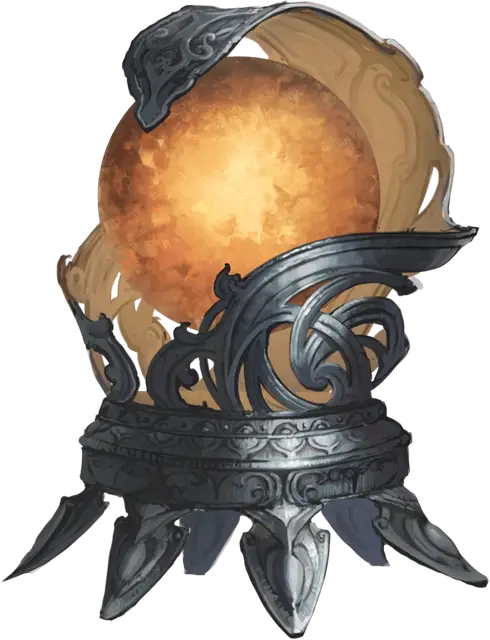

Кристаллическая хроника
Crystalline Chronicle
Чудесный предмет, очень редкий (требуется настройка волшебником)

Рекомендованная стоимость 5 001-50 000 зм
Гравированная хрустальная сфера размером с грейпфрут слабо гудит и пульсирует нерегулярными вспышками внутреннего света. Когда вы касаетесь кристалла, вы можете извлекать и хранить информацию и заклинания в кристалле одновременно с чтением и письмом. Найденный кристалл содержит следующие заклинания: крепость интеллекта [intellect fortress], ментальная связь Рэри [Rary’s telepathic bond], обнаружение мыслей [detect thoughts], послание [sending], психическая плеть Таши [Tasha’s mind whip], телекинез [telekinesis] и Тензеров парящий диск [Tenser’s floating disk]. Он функционирует для вас как книга заклинаний, заклинания и другие записи в которой психически закодированы.
Пока вы держите кристалл, вы можете использовать его в качестве заклинательной фокусировки для ваших заклинаний волшебника и знаете заговоры волшебная рука [mage hand], расщепление разума [mind sliver] и сообщение [message], если не знаете их без использования кристалла.
Кристалл имеет 3 заряда и ежедневно восстанавливает 1к3 заряда на рассвете. Вы можете использовать заряды следующими способами, пока держите кристалл:
- Если вы потратите 1 минуту на изучение информации в кристалле, вы можете израсходовать 1 заряд и заменить одно из своих подготовленных заклинаний волшебника на другое заклинание из книги.
- Когда вы накладываете заклинание волшебника, вы можете потратить 1 заряд, чтобы наложить заклинание без вербальных, соматических и материальных компонентов стоимостью до 100 зм.